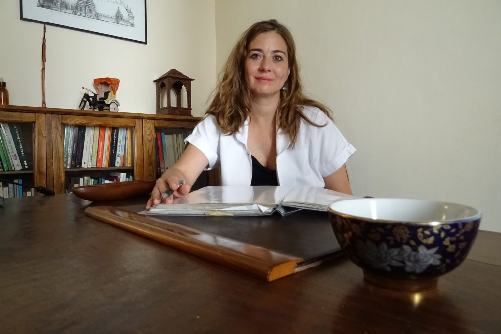

El Loto crece en lugares pantanosos, en el fango y, a pesar de ello, se levanta sobre la superficie para florecer flamante e impecable; es ahí donde radica su esencia. Representa los distintos estados de purificación, crece en el lodo, un terreno que simboliza la vida humana, llena de dificultades, conflictos e ignorancia. La planta aparece pura sobre la superficie y finalmente brota una hermosa Flor de Loto que simboliza el Despertar. Nosotros también tenemos esa capacidad de hacer frente a la oscuridad y florecer.
MTC
Es un sistema médico completo con más de 4.000 años de antigüedad y experiencia clínica. Los pilares básicos son la teoría del yin y el yang, fuerzas opuestas pero complementarias cuyo equilibrio en la persona es esencial para su bienestar;
Acupuntura
Consiste en la estimulación con agujas muy finas e indoloras de puntos específicos en el cuerpo para desbloquear el flujo de energía y así recuperar, mejorar y mantener el estado de salud. La enfermedad para la MTC es una desarmonía o desequilibrio en la persona...
Tratamientos
Dolor físico generalizado • Problemas musculares y articulares • Procesos inflamatorios • Neuralgias • Migrañas • Lumbalgia • Ciática • Cervicalgia • Estrés y ansiedad • Insomnio • Agotamiento físico e intelectual • Hipertirodismo e hipotiroidismo • Acúfenos • Vértigos
Técnicas
Ventosas
Electroacupuntura
Auriculoterápia
Masaje Tuina
Qi Gong
Moxibustión
Sobre mí
Soy terapeuta e investigadora en Medicina Tradicional China. Para mí, ser terapeuta es un camino de vida en el que acompaño a las personas en su sanación de alma a alma. En esta trayectoria, he tomado conciencia del hecho de que la salud no es sólo la ausencia de enfermedades, sino que además es el equilibrio entre los diversos aspectos de nuestra vida y el respeto por la vida de todos los seres. Es un privilegio para mí poder aportar un granito de arena para contribuir a la sanación de los demás.
"La sabiduría no es sólo la realización de uno mismo, también es la manifestación más eficaz del amor por la humanidad"
Tseng Tsé
Graduado en Medicina Tradicional China
Acupuntura. Fitoterapia. Masaje Tuina. Moxibustión. Dietética Energética China. Centro de Estudios de Naturopatía y Acupuntura, CENAC. Barcelona
Cursos de Postgrado en Medicina Tradicional China
Dr. Tran Viett Dzung. Instituto de Medicina Energética. Alicante.
Curso de Hipnosis Ericksioniana y Programacion neurilinguística PNL
The Proudfoot School of Hypnosis & Psychotherapy of England con Jacqueline Hitchcock. Barcelona.
Curso de Flores de Bach
Centro de Estudios de Naturopatía y Acupuntura, CENAC. Barcelona.
En curso
Desprogramación biológica. Método integra-t
Testimonios
Maria, 41 años
Soy artesana y encuentro mucha similitud entre mi trabajo y el de Cristina. Es un trabajo lleno de amor y dedicación. Lo mejor y lo que más me convence de ella es que ama lo que hace, porque si amas algo lo haces bien, muy bien.
Ignasi, 48 años
Cristina es una terapeuta de generosidad sin límite a la hora de compartir conocimientos e instrumentos para alcanzar la curación. Es exhaustiva, metódica y certera en el diagnóstico. Su humanidad impregna el trato con el que acoge a sus pacientes. Sin duda una gran profesional y mejor persona.
Montse, 51 años
Sólo tengo palabras amorosas para agradecer a Cristina lo que he hecho por mí y cómo hace con esas agujitas mágicas: te las pone, las mueve, las calienta, las saca y ni te enteras, sólo notas el agradable cosquilleo de la energía que se mueve, se reparte y sana...
María José, 40 años
Después de algo más de un año intentado quedar embarazada, y cuando ya estaba decidida a acudir a una clínica de fertilidad, alguien me aconsejó probar con la Acupuntura china. No me lo pensé dos veces, antes de empezar con tratamientos médicos quería agotar todas las vías naturales. Fue así como contacté Cristina.
Contacto
acupunturabarcelona@cristinaescobedo.com
Barcelona / Vilassar de Mar
600 089 085
Medicina Tradicional China
El Loto crece en lugares pantanosos, en el fango y, a pesar de ello, se levanta sobre la superficie para florecer flamante e impecable; es ahí donde radica su esencia. Representa los distintos estados de purificación, crece en el lodo, un terreno que simboliza la vida humana, llena de dificultades, conflictos e ignorancia. La planta aparece pura sobre la superficie y finalmente brota una hermosa Flor de Loto que simboliza el Despertar. Nosotros también tenemos esa capacidad de hacer frente a la oscuridad y florecer. La esencia de la transformación sucede si logramos transcender todo aquello que nos perturba, que nos enferma, que nos confunde, que nos condiciona. Solamente tenemos que permitir que la transformación sea posible estando relajados, presentes y disponibles. Los beneficios de la Medicina Tradicional China (MTC) son en muchas ocasiones bastante inmediatos. Se puede ver el cambio que se produce en la persona a nivel físico, mental, emocional y espiritual. Es por ello que pienso que la MTC se ha de dar a conocer a los pacientes para que puedan beneficiarse de ella, ayudar a transformar sus vidas y florecer.
Ventosas
Se usan sobretodo en problemas musculares y contracturas. Succionan por vaciamiento de aire, con o sin calor, actuando en puntos o zonas concretas. Este método tiene la función de calentar y promover la libre circulación de la energía y la sangre en los meridianos, disminuir la tumefacción y el dolor, así como dispersar el frío y la humedad. Están elaboradas con materiales diversos como cristal y bambú y presentan también tamaños distintos para adecuarse mejor a cada caso concreto.
Electroacupuntura
Utiliza los impulsos eléctricos de un pequeño generador cuyos diodos están conectados a las agujas para estimular los puntos del paciente produciendo así una ligera sensación de hormigueo sin dolor. Se consiguen notables efectos específicos antiinflamatorios y analgésicos, así como activación de la energía y de la circulación.
Auriculoterápia
La oreja es un microsistema donde está reflejado nuestro cuerpo. Se insertan pequeñas agujas o semillas que se pueden dejar puestas para ayudar en el proceso de curación.
Masaje Tuina
Es un conjunto de técnicas que no sólo relaja los músculos y libera las articulaciones, también actúa energéticamente favoreciendo la circulación por los meridianos, regulando los órganos.
Qi Gong
Es una técnica que consta de diferentes ejercicios, respiraciones y meditaciones que buscan resolver tensiones y bloqueos físicos, emocionales, mentales y sexuales. Con su práctica se va desarrollando cada vez más presencia, conciencia para vivir mejor y en buena salud.
Moxibustión
Es una técnica que utiliza el calor de las moxas para estimular los puntos o zonas más amplias. Las moxas son unos cilindros elaborados con conglomerado de la planta Artemisa, que arde lento y alcanza una gran temperatura, además de producir vapores y aceites esenciales, tratando así el dolor y ayudando a recuperar la energía yang del cuerpo.
Medicina Tradicional China
Es un sistema médico completo con más de 4.000 años de antigüedad y experiencia clínica. Los pilares básicos son la teoría del yin y el yang, fuerzas opuestas pero complementarias cuyo equilibrio en la persona es esencial para su bienestar; y la Teoría de los cinco elementos de la naturaleza: tierra, metal, agua, madera y fuego que está basada en la observación del mundo natural y su funcionamiento, relacionando así una serie de procesos dinámicos cíclicos y sucesivos. Los principios de la Medicina Tradicional China vienen de la filosofía tradicional taoísta. La sabiduría taoísta nos dice que en la corriente de la vida sólo tenemos que seguir su curso natural. Si queremos detener el torrente utilizando la fuerza, perderemos nuestra energía. Si vamos en contra de esa agua, nos ahogaremos. Así que, si seguimos el curso de la vida, canalizamos el torrente y seremos llevados en el buen sentido, atraeremos los beneficios de las cosas sin dificultad. Y es así como sucede en nuestra vida. La Medicina Tradicional China se basa en la energía vital, denominada qi, sustancia fundamental del organismo que circula por los meridianos principales y es el fruto de la unión de la energía que viene de la tierra, es decir, de la alimentación, con la del cielo, la de la respiración. Es lo que los antiguos chinos denominaban el hombre entre el cielo y la tierra. Considera al individuo de una forma integral, como un todo, en el que no se puede desligar lo físico, lo emocional, lo mental, lo espiritual y al ser de su entorno, la naturaleza. En la Medicina Tradicional China hacemos hincapié en la prevención que consistirá en conocer, entender y aplicar los principios o leyes universales a la propia vida. La auténtica curación es un proceso activo que implica la participación y el despertar del individuo para lograr la transformación. El cambio es la única verdad del universo, quien no se desarrolla y crece de forma continuada se estanca y por tanto enferma por ir en contra de una ley natural. El ser humano es un microcosmos dentro de un macrocosmos y se rige por las mismas leyes o principios vitales que rigen el universo.
Acupuntura
Consiste en la estimulación con agujas muy finas e indoloras de puntos específicos en el cuerpo para desbloquear el flujo de energía y así recuperar, mejorar y mantener el estado de salud. La enfermedad para la MTC es una desarmonía o desequilibrio en la persona mantenida durante un periodo prolongado y sólo se puede instaurar en el organismo cuando éste ha perdido su equilibrio natural, o cuando la energía vital no circula libremente. A través de la acupuntura se pretende restablecer el equilibrio perdido y desbloquear la energía para ayudar al organismo a recuperar la salud. La acupuntura es reconocida por la OMS (Organización Mundial de la Salud) desde el año 1979. “La energía es la fuerza que mueve la materia”
Sesión y diagnóstico

La primera visita dura aproximadamente una hora y media y durante la misma realizamos el diagnóstico a través de una entrevista en profundidad con el paciente, observando la lengua y tomando el pulso. Las visitas habituales tienen una duración de una hora aproximadamente. Para tratar problemas crónicos se necesita normalmente un ciclo de tratamiento de 8 a 10 sesiones. Algunas enfermedades crónicas necesitan de 2 a 3 ciclos o un tratamiento de mantenimiento de 1 o 2 veces al mes.
Tratamientos
Estos son los que frecuentemente trato en consulta:
Dolor físico generalizado • Problemas musculares y articulares • Procesos inflamatorios • Neuralgias • Migrañas • Lumbalgia • Ciática • Cervicalgia • Estrés y ansiedad • Insomnio • Agotamiento físico e intelectual • Hipertirodismo e hipotiroidismo • Acúfenos • Vértigos • Incontinencia • Retención de orina • Problemas menstruales • Menopausia • Infertilidad • Embarazo (náuseas, girar bebé que está de nalgas...) • Recuperación postparto • Alergias • Problemas digestivos • Estreñimiento • Diarrea • Problemas respiratorios • Dejar de fumar • Perder peso • Apoyo al tratamiento con quimioterapia y radioterapia • Secuelas evento cerebrovascular
Aunque se pueden tratar las siguientes patologías:
Enfermedades de la piel: eczemas, dermatitis, psoriasis, herpes zoster, urticaria,…
Enfermedades autoinmunes: artritis reumatoide, lupus eritematoso sistémico, diabetes tipo I, esclerosis sistémica, esclerosis múltiple...
ME PUEDES CONSULTAR TU CASO Y TE PODRÉ ASESORAR SIN COMPROMISO.
Sobre mi
Mi primer contacto fue con la práctica de Thai Chi Chuan y Kung Fu con un maestro en Medicina Tradicional China. A continuación, estuve practicando meditación Zen y fue cuando mi vida dio un giro importante, al profundizar en mí, en mi respiración y mis emociones. A partir de aquí, mi búsqueda continuó y mi interés por las técnicas orientales me llevó a estudiar MTC. Para mí, se abrió una nueva concepción de la vida con esta medicina milenaria y otro lugar desde donde tratar al paciente de un modo holístico, donde la persona puede resolver tensiones, bloqueos físicos, emocionales y mentales en el proceso de su curación. Mi interés fue creciendo y supe que era a lo que me quería dedicar porque me permitía crecer, amar lo que hacía y acompañar a otras personas en su proceso. Ha sido como un salto en el que ya no hay marcha atrás porque ya no puedes ver las cosas como antes. Con la práctica de la MTC, puedo ver la transformación de las personas y ver que siempre ayudas porque reequilibras a la persona energéticamente a nivel físico, mental y emocional. Dentro de la MTC pude conocer el Qi Gong y con su práctica he podido ir desarrollando cada vez más presencia y consciencia para aceptar lo que la vida nos ofrece, nos revela cotidianamente y nos enseña. Diferentes maestros me han acompañado y me acompañan durante todo este proceso y mi gratitud es infinita hacia ellos porque sola no hubiese podido hacer este camino.
Maria, 41 Años
Soy artesana y encuentro mucha similitud entre mi trabajo y el de Cristina. Es un trabajo lleno de amor y dedicación. Lo mejor y lo que más me convence de ella es que ama lo que hace, porque si amas algo lo haces bien, muy bien. Y le pone pasión, la llamas, te pregunta, y sientes de inmediato un interés verdadero, porque le gusta y lo disfruta. Además, me encanta la gente que en lugar de quedarse estancada en sus conocimientos, sigue formándose y creciendo como profesional, como hace ella. Me convencen muchas cosas de ella como profesional, pero lo que más hace sentir en buenas manos, va más allá de su profesionalidad, es su amorosidad y ternura.
Montse, 51 Años
Sólo tengo palabras amorosas para agradecer a Cristina lo que he hecho por mí y cómo hace con esas agujitas mágicas: te las pone, las mueve, las calienta, las saca y ni te enteras, sólo notas el agradable cosquilleo de la energía que se mueve, se reparte y sana…eso si pregunta, investiga y busca todo lo relacionado con lo que pasa hasta dar en el clavo... La primera vez probamos de sanar unas diarreas crónicas que había tenido desde la adolescencia habiendo probado muchos tratamientos sin éxito: al cabo de unas cuantas sesiones empecé a encontrarme mejor hasta que desaparecieron por completo hasta el día de hoy… De esto hace ya más de 6 años y ni rastro de la afección. También me sanó una epicondilitis en los dos codos que no me permitían ni coger un vaso casi, increíble, y lo más impactante de todo fue el tratamiento para dejar de fumar que después de 35 años fumando sin dejarlo, te haga hipnosis, te ponga agujas y no fumes nunca más y de esto hace año y medio y además me siento como si no hubiera fumado nunca. Así que sólo puedo decir con mucho amor que Cristina es un ángel sanador y que para sentirlo sólo tienes que mirar en sus ojos ¡Compruébalo!
María José, 41 Años
Después de algo más de un año intentado quedar embarazada, y cuando ya estaba decidida a acudir a una clínica de fertilidad, alguien me aconsejó probar con la Acupuntura china. No me lo pensé dos veces, antes de empezar con tratamientos médicos quería agotar todas las vías naturales. Fue así como contacté Cristina. Empecé asistiendo a sesiones semanales y en menos de dos meses estaba embarazada. No podía creerlo. Después de tanto tiempo intentándolo sin éxito, por fin lo había conseguido.
Sin duda recomendaría esta terapia como método alternativo de fertilidad y en especial a Cristina, que además de ser una gran profesional, es una persona encantadora que transmite paz y tranquilidad. Agradezco enormemente su ayuda en momentos tan importantes de mi vida. Mil gracias Cristina!
Aviso Legal
El presente sitio web tiene por objeto dar a conocer Cristina Escobedo Forés y tiene un carácter meramente informativo. Cristina Escobedo Forés no será en ningún caso responsable de los errores u omisiones que pudieran existir en la información facilitada, ni de la aplicación o uso concreto que pudiera hacerse de la misma. Cristina Escobedo Forés se reserva el derecho de modificar en cualquier momento y sin previo aviso el contenido de la web, el presente Aviso Legal así como las condiciones de uso que pudieran resultar aplicables a la presente web. Identificación En cumplimiento con el deber de información recogido en el artículo 10 de la Ley 34/2002, de 11 de julio, de Servicios de la Sociedad de la Información y del Comercio Electrónico, los datos aquí consignados corresponden a la entidad titular de esta Web: http://cristinaescobedo.com/ Nombre y apellidos: Cristina Escobedo Forés Dirección: Encarnación 175. 08024 Barcelona (España). Teléfono: 600 089 085 e-mail: cristinaescobedo@msn.com Propiedad intelectual e industrial Todos los derechos de la Propiedad Industrial e Intelectual de la totalidad de elementos contenidos en esta Web, incluidos los textos, imágenes y documentos, pertenecen a Cristina Escobedo Forés, y se encuentran protegidos por las leyes españolas e internacionales sobre propiedad Intelectual e Industrial. Queda expresamente prohibida la reproducción total o parcial de este sitio web y de cualquiera de sus contenidos sin permiso y por escrito de Cristina Escobedo Forés. El acceso al sitio web no implica ningún tipo de renuncia, transmisión, licencia o cesión de dichos derechos por parte de Cristina Escobedo Forés, salvo que se establezca expresamente lo contrario.
Condiciones de uso
El acceso a este sitio Web implica la aceptación de estas condiciones de uso sin reservas que regulan el acceso y la utilización del mismo con el fin de poner a disposición de los usuarios información sobre nuestros productos y servicios.
Se prohíbe expresamente la utilización de los contenidos de este sitio Web para su utilización con fines comerciales o para su distribución, transformación o comunicación.
Cristina Escobedo Forés, no responderá de ninguna consecuencia, daño o perjuicio que pudiera derivarse de dicha utilización o uso de la información.
Tanto el acceso a esta Web como el uso que pueda hacerse de la información contenida en la misma es de la exclusiva responsabilidad de quien lo realiza.
El usuario se obliga a no utilizar la información que se publica en esta Web con fines o efectos ilícitos o lesivos, a no dañar o inutilizar la información ya no realizar cualquier otra acción que pueda ser contraria al contenido de este Aviso Legal.
Cristina Escobedo Forés, se reserva el derecho a modificar los contenidos de la oferta comercial de los productos cuando lo estime oportuno y mantener su contenido actualizado.
Cristina Escobedo Forés, no puede asegurar la inexistencia de interrupciones o errores en el acceso a este sitio Web, aunque pondrá sus mayores esfuerzos para evitarlos.
Política de Protección de Datos
De conformidad con lo dispuesto en la Ley Orgánica 15/1999, de Protección de Datos de Carácter Personal, se informa al usuario que los datos personales suministrados serán incorporados a un fichero titularidad de Cristina Escobedo Forés, con el fin de poder gestionar sus peticiones y / o consultas.
A través del envío de correos electrónicos o cualquier otro tipo de solicitud de información remitida a Cristina Escobedo Forés, el interesado presta su consentimiento expreso para el tratamiento de sus datos personales y para recibir comunicaciones sobre las actividades y servicios de Cristina Escobedo Forés.
En ningún caso Cristina Escobedo Forés, utilizará los datos personales de los interesados para fines distintos de los anteriormente mencionados, y se compromete a guardar el debido secreto profesional ya establecer las medidas técnicas y organizativas necesarias para salvaguardar la información conforme a los requerimientos establecidos en el RD 1720 / 2007, de desarrollo de la LOPD.
Puede ejercer los derechos de acceso, rectificación, cancelación y oposición en cualquier momento, mediante escrito, acompañado de copia de documento oficial que le identifique, dirigido a Cristina Escobedo Forés, Encarnación 175. 08024 Barcelona (España).
redes sociales
Ponemos en su conocimiento que estamos presentes en Redes Sociales. El tratamiento de los datos que se realice de las personas que se hagan seguidoras (y / o realicen cualquier vínculo o acción de conexión a través de las Redes Sociales) de las páginas oficiales de cristinaescobedo.com, en las redes sociales, se regirá por este apartado, así como para aquellas condiciones de uso, políticas de privacidad y demás normativas de acceso, uso y similares que pertenezcan a la red social que corresponda, de las que el usuario de las redes sociales, ya habrá aceptado. Cristina Escobedo Forés, tratará sus datos con las finalidades de administrar correctamente su presencia en la red social que corresponda, informarle de actividades o servicios de cristinaescobedo.com, o de terceros que puedan estar relacionados con nuestra actividad así como para cualquier otra finalidad que las normativas de las Redes Sociales puedan permitir.
Enlaces
Al pinchar en cualquiera de los enlaces (o hiperenlaces) que puedan aparecer en nuestro sitio web, usted acepta hacerlo a título informativo y reconoce que Cristina Escobedo Forés no ejerce control sobre ni responde del contenido de la información a la que acceda.
Política de protección de menores
Queda prohibido el acceso y uso de este sitio Web a los menores de 14 años que no estén debidamente autorizados. Cristina Escobedo Forés, entiende que desde el momento en que un menor accede a esta Web, cuenta con el permiso de sus padres, de su tutor o de su representante legal.
Cristina Escobedo Forés recuerda a las personas mayores de edad que tengan a su cargo menores, que será de su exclusiva responsabilidad si algún menor incorpora sus datos para solicitar alguna información o servicio.
También se les informa que existen programas informáticos para acotar la navegación mediante el filtro o bloqueo a determinados contenidos.
Legislación y jurisdicción aplicable
Las presentes condiciones se rigen por la normativa española vigente que le es de aplicación. Para la resolución de las controversias que pudieran derivarse como consecuencia de lo dispuesto en las presentes disposiciones, y con renuncia expresa a cualquier otro Fuori que pudiera corresponder, el Usuario acuerda someterse a la Jurisdicción de los Juzgados y Tribunales de Barcelona (España ).
Agradecimientos
Gracias a Carles Violan por todo el tiempo dedicado en la creación y montaje.
Gracias a Raquel Calderón por la revisión ortográfica.
Gracias a María Masgoret y a Rai Cabiró por la fotografía.
Gracias a María Fructuoso por diseñar el logo.
Gracias a Ignasi, María, Montse y María José por vuestros testimonios. En los que por respeto a la intimidad, sólo he puesto el nombre de pila.
Muchas gracias a todos vosotros. Me siento muy afortunada por el acompañamiento, el cariño y por todo el trabajo, ayuda y apoyo que ha hecho posible esta web.